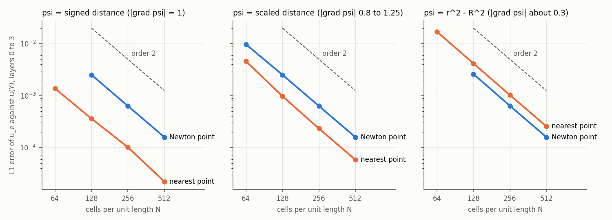
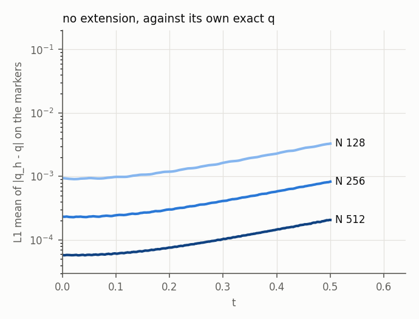
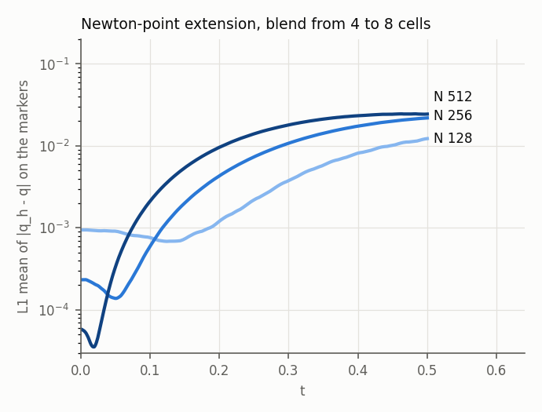
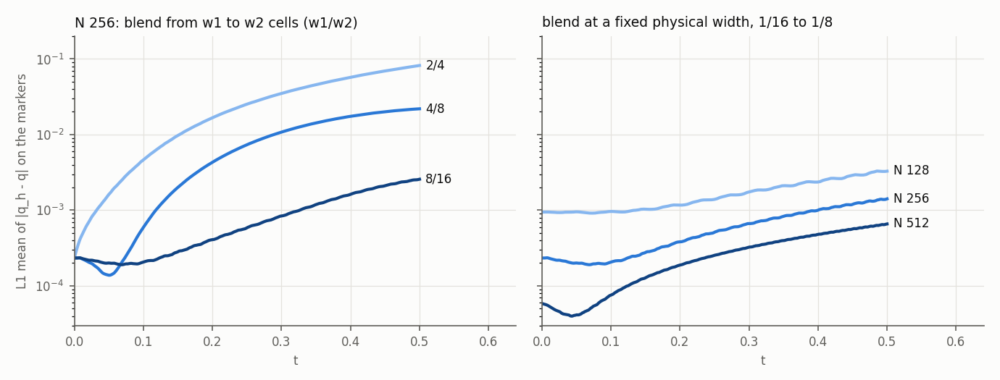

Status, 18 November 2026
For Tomislav Marić, Dieter Bothe and Kohei Soga
Evidence classes on the slides: MEASURED a run shows it, DERIVED a calculation shows it, HYPOTHESIS not yet tested.
Sources of every number: STATUS.md sections 11.39 and 11.40; the plan
docs/plan-velocity-extension-verification.md; the knowledge-base note
concepts/pde-level-set-verification.
The model without the source term:
\[ \partial_t\phi + \mathbf u_e\cdot\nabla\phi = 0, \qquad \mathbf u_e(\mathbf x) = \mathbf u(Y(\mathbf x)), \] \[ Y(\mathbf x) = \mathbf x - \phi\,\frac{\nabla\phi}{|\nabla\phi|^2}. \]\(Y\) is the Newton point of \(\phi\) from \(\mathbf x\).
Let \(q = |\nabla\phi|\). Without the extension, \(D_t q = -q\,\mathbf n\cdot\nabla\mathbf u\,\mathbf n\). With the exact extension, \(q\) stays constant along the material points of the interface (manuscript of Bothe, Marić and Soga).
| step | question | state |
|---|---|---|
| A | static: how close is the computed \(\mathbf u_e\) to the exact \(\mathbf u(Y)\)? | done in 2D; 3D waits |
| B | transport of \(\phi\) with the extension; does \(q\) stay constant on the markers? | defect found |
| C | the extension computed from \(\phi_h\) inside the time loop | waits |
| D | the source term \(\beta\,\phi\,f(q)\) | waits |
| E | coupled flow, then adaptive refinement | waits |
Note: the step-B runs compute \(Y\) from \(\phi_h\). They therefore already contain the loop \(\phi_h \to Y_h \to \mathbf u_e \to \phi_h\) of step C. The exact-foot-point arm of step B was not built yet.
A method setting is a number of cells, a CFL number, or a function of local fields (\(q\), curvature, strain rate, \(h\)). A physical length that we choose for one case is not allowed.
Consequence: the band where \(\mathbf u_e = \mathbf u(Y)\) holds has a fixed number of cells. Its physical width falls with \(h\).
Layer 0 is the set of cells that the zero level set cuts; layer \(l\) is the \(l\)-th ring of neighbours around it. The curvature \(\kappa = \nabla\cdot(\nabla\phi/|\nabla\phi|)\) at the interface reads \(\phi\) on layers 0 to 2 (cell value) and 0 to 3 (face value). MEASURED with an exact solution: an \(O(h)\) error in these layers makes the curvature error grow as \(1/h\). The same error one layer further out has no effect.
Consequence: the extension must be second order on layers 0 to 3. The blend back to \(\mathbf u\) starts at 4 cells: on a hexahedral mesh, a layer-3 cell centre has \(|d| \le 3.71\,h\). DERIVED
| \(\phi = d\) | signed distance | \(q = 1\) |
| \(\phi = d\,g(\mathbf x)\) | scaled distance, smooth \(g\) | \(q\) from 0.8 to 1.25 |
| \(\phi = r^2 - R^2\) | quadratic | \(q\) about 0.3 at the interface |

L1 error against \(\mathbf u(Y)\) per layer, signed distance, \(N = 512\):
| layer | 0 | 1 | 2 | 3 | ratio layer 3 / layer 0 |
|---|---|---|---|---|---|
| Newton point | 9.9e-6 | 6.9e-5 | 1.9e-4 | 3.7e-4 | 37 |
| nearest point | 1.2e-5 | 1.9e-5 | 2.6e-5 | 3.1e-5 | 2.6 |
Three step-A cases did not start: the cluster scratch space reached its file limit. They are launch failures, not results. No verdict reads them.
with \(\mathbf z = \mathbf x - \mathbf x_c\) and \(R = 0.15\). On the circle \(q_0 = g\) goes from 0.70 to 1.30.

No extension, pure strain. The reference is the exact \(q = |F^{-T}\nabla\phi_0|\), with \(F\) the deformation gradient integrated along each marker.

| candidate cause | test (Newton point, \(N = 256\) unless stated) | result |
|---|---|---|
| the transport of \(\phi\) | no extension, against its own exact \(q\) | order 2.00, no onset |
| the time integration | CFL 0.5, 0.25, 0.125 | onset at \(t\) = 0.093, 0.092, 0.090; error at \(T\) 2.19e-2, 2.14e-2, 2.11e-2. The growth runs per unit time: a spatial operator. |
| implicit Euler instead of Crank-Nicolson | 0.41 to 0.84 of the Crank-Nicolson error, position error 2 to 4 times larger: damping only | |
| the gradient limiter | unlimited reconstruction gradient | change below 1e-3 relative |
| the flux form | interpolated velocity against corrected flux | change below 1e-3 relative. Not a valid test: for a linear velocity on a uniform mesh the two forms are equal DERIVED |
| feedback inside the band, rate proportional to its width | blend from 2/4, 4/8, 8/16 cells | sign reversed: a wider band grows slower. I was wrong about this mechanism. |
| the medial axis of the sharpening ellipse | strain \(a = 0.3\), band never reaches the axis | order 1.38 / 1.14 at \(T\); growth from \(t = 0.47\) at \(N = 512\) |
| the domain decomposition | 4 ranks against serial | equal to 4e-6 |

| test | what it separates | cost |
|---|---|---|
| (a) Extension from the exact foot point: \(\mathbf u_e = \mathbf u(\Pi(\mathbf x, t))\), \(\Pi\) on the exact ellipse at time \(t\) | No feedback of \(\phi_h\). The marker reference stays exact. If the growth stays: the transport of a non-solenoidal \(\mathbf u_e\) with a band edge. If it goes: the feedback through \(Y_h\). | one new model (the exact closest point on an ellipse exists in the library), then one study |
| (b) Frozen extension: \(\mathbf u_e\) computed once from \(\phi_0\) and kept | Feedback of \(\phi\) on \(\mathbf u_e\) against the transport of a non-solenoidal \(\mathbf u_e\). DERIVED The frozen field is not the extension of the moved interface, so the marker reference is not exact. Read only the onset, the rate and the sign under refinement. | about one hour on the cluster |
| (c) A band edge that the characteristics leave | The source \(\beta\phi f(q)\) with feedback carries the velocity \(-\Phi f'(q)\,\mathbf n\) away from the interface (manuscript eq. 3.2) DERIVED. A stabilising source can make the band edge an outflow edge. Risk: a source that damps the growth can hide the cause. | changes the plan order: D before C |
The answers decide between option (c) and a change of the extension itself.
BACKUP
| quantity | \(N\) = 128 / 256 / 512 | order |
|---|---|---|
| Step A, layers 0 to 3, against \(\mathbf u(Y)\) | ||
| Newton point, cells, signed distance | 2.52e-3 / 6.33e-4 / 1.59e-4 | 1.99 to 2.03 (all inputs) |
| Newton point, face flux | 1.91 to 2.06 | |
| nearest point, cells | 1.83 to 2.23 | |
| nearest point, face flux | 1.40 to 1.60 (circle), 1.31 to 1.63 (ellipse) | |
| Step B, pure strain \(a = 1\), L1 mean of \(|q_h - q|\) on the markers at \(T = 0.5\) | ||
| read-out at \(t = 0\) | 9.4e-4 / 2.3e-4 / 5.8e-5 | 2.02, 2.00 |
| no extension, against \(q_0\) | 0.33 / 0.33 / 0.33 | 0.00 |
| no extension, against its own exact \(q\) | 3.30e-3 / 8.29e-4 / 2.07e-4 | 1.99, 2.00 |
| Newton point, blend 4/8 cells | 1.23e-2 / 2.19e-2 / 2.45e-2 | −0.84, −0.16 |
| nearest point, 3 layers | 1.03e-2 / 2.46e-2 / 3.54e-2 | negative |
| Newton point, blend at fixed physical width 1/16 to 1/8 | 3.28e-3 / 1.41e-3 / 6.59e-4 | 1.22, 1.10 |
| same, position error \(\phi_h/q_0\) | 1.87e-4 / 8.02e-5 / 3.66e-5 | 1.22, 1.13 |
| Newton point, strain \(a = 0.3\), fixed physical width | 7.3e-4 / 2.8e-4 / 1.3e-4 | 1.38, 1.14 |
| Step B, band width at \(N = 256\) (blend w1/w2 cells; nearest point: layers) | ||
| Newton point 2/4, 4/8, 8/16 | onset \(t\) 0.013, 0.093, 0.218; rate 28.2, 24.3, 6.3; error at \(T\) 8.2e-2, 2.2e-2, 2.6e-3 | |
| nearest point 2, 3, 5 layers | onset \(t\) 0.048, 0.089, 0.187; rate 29.6, 23.8, 5.3; error at \(T\) 1.7e-2, 2.5e-2, 2.4e-3 | |
BACKUP
| item | name in the code | commit |
|---|---|---|
| Newton-point extension | projectionBlend, distance first, w1 4, w2 8 | existing |
| nearest-point extension | closestPoint, Newton step, layer band, extend through fade | existing |
| per-layer read-out of the static test (layers 0 to 8, against \(\mathbf u(\Pi)\), \(\mathbf u(Y)\), the blend) | leiaTestVelocityExtension, leiaTestVelocityExtensionLayers.csv | c44b5738 |
| the graded circle \(\phi_0 = g(\mathbf z)(|\mathbf z| - R)\) | gradedSphere (implicit surface) | fc679662 |
| the linear flow \(\mathbf v = G(\mathbf x - \mathbf x_0) + \mathbf b\) | linearFlow (velocity model) | fc679662 |
| 720 markers, RK4, \(q_h\) and \(\phi_h\) at the markers, deformation gradient \(F\) | interfaceMarkers (function object) | fc679662; parallel output path aebad0c7 |
| the case | markerTest2D (problem data only) | fc679662 |
All new items are runtime-selectable. The existing studies stay identical: 100 of 100 result files equal the previous clone.
BACKUP
STATUS.md 11.39 (step A round 2) and 11.40 (step B, items 1 to 15).docs/plan-velocity-extension-verification.md, sections 1, 5, 6, 8, 10a.docs/knowledge-base/concepts/pde-level-set-verification.md; failed routes in negative-log.md.docs/pde-level-set/pde-level-set-article/data/figures/stepA_extension_convergence.png,
stepB_marker_histories.png and the panels stepB_marker_panels_*.png
(workflow/scripts/plot_b_marker_histories.py --panels).config/pdeLevelSet/aStatic2Dr2*.yaml; read-out pde_a6_analysis.py.bMarker2D*, bDiscr2Dstrain, bRaw2Dstrain,
bBand2Dstrain*, bEdge2Dstrain*, bSkel2Dstrain*;
read-outs pde_b1_analysis.py to pde_b5_analysis.py.
Each config header holds the prediction written before the run.leia-pde-h and leia-pde-h2.